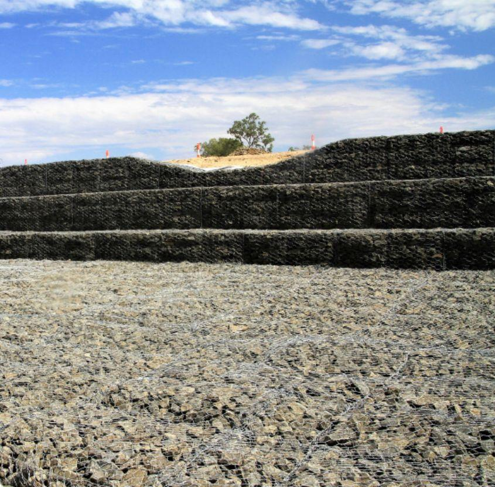
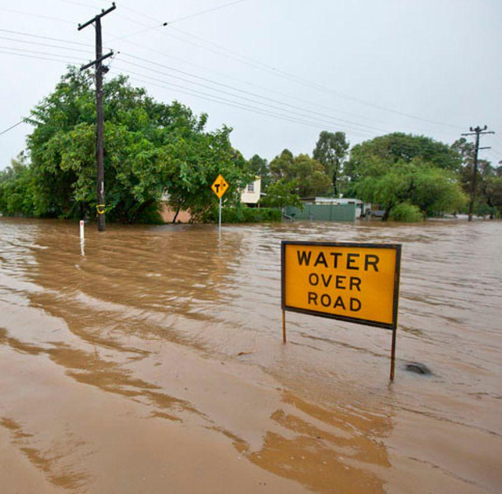

Project Overview
Roma is a small town situated on Bungil Creek, a tributary of the Condamine River, approximately 480 kilometres west-northwest of Brisbane, with a population of around 7,000 people.
In March 2010, Roma experienced its worst floods in over a century. Flooding reoccurred in April 2011 during a year of record rainfall. In February 2012, the town was devastated by historic flooding that surpassed levels seen in 2010. This event inundated 444 homes, double the number affected over the previous two years combined.
Due to three successive years of flooding, many residents struggled to obtain insurance unless flood risk mitigation measures were implemented. Existing mitigation efforts proved insufficient for the severity of the floods experienced.

The Challenge
The town of Roma faced recurring devastating floods that caused significant damage to homes and infrastructure. After three consecutive years of severe flooding (2010, 2011, and 2012), residents struggled to obtain insurance coverage, and existing flood mitigation measures proved inadequate for the scale of the disasters.
The challenge was to design and implement a comprehensive flood defence system that would:
- Protect additional properties from above-floor flooding
- Complement the existing Stage 1 levee
- Be completed before the summer storm season
- Withstand the hydraulic forces of major flood events
Our Solution
The consulting engineer led the flood mitigation project design, conducting ecological and overtopping assessments, hydrology and hydraulic studies, and preparing the operations and maintenance manual. In collaboration with Maranoa Regional Council and the consultant, Geofabrics contributed to the design by proposing modifications and cost-saving recommendations, including the use of larger gabion baskets, while maintaining the intent and function of the original design.
The contractor supplied a 13-tonne excavator and a 10-person skilled installation crew who completed the work in five weeks, ahead of the eight-week schedule. The installation process was streamlined by dividing the team into specialised crews responsible for prefabricating, setting up, filling, and closing gabion cages and rock mattresses, ensuring efficiency and continuity.
Kestrel Metal supplied 162 gabion baskets, 334 rock mattresses and 6,300 m² of Bidim Green non-woven geotextile for the Roma Flood Levee Stage 2 project. This stage involved constructing a diversion channel east of Bungil Creek and extending the western levee to the west. Designed to complement the existing stage 1 levee, which already protects 480 properties, Stage 2 reduced the risk of above-floor flooding for an additional 51 properties. The levee was completed in time for the summer storm season and potential flood events.
The success of the project was underpinned by Maranoa Regional Council's detailed planning. This included bulk and preparatory earthworks, site access management, delivery of correctly specified rock in line with Department of Transport and Main Roads guidelines, and daily flood risk mitigation by securing completed sections to minimise rain damage. This project was successfully completed in 2018.

Products
Gabion Basket
- Constructed with double-twisted steel wire mesh to create flexible, permeable, and continuous structures, ideal for gravity retaining walls, erosion control, channel linings, revetments, and hydraulic structures
- Manufactured for an expected working life of up to 120 years, ensuring long-term durability and performance
- High-grade polymer coating provides exceptional corrosion resistance and structural strength
- Can be built up to 5–10 metres in height
Rock Mattress
- Made with double-twisted steel wire mesh filled with rock to form thin, flexible cages designed to resist movement in high-flow conditions
- Prove to be over 50 percent more effective than rip-rap in high shear stress conditions
- Permanent solution for hydraulic applications such as weirs, riverbank scour protection and embankment stability in channel linings
Interested in gabion solutions for flood control projects? Contact our engineering team to discuss your requirements.
Interested in gabion solutions for flood control projects? Contact our engineering team to discuss your requirements. Request a Quote